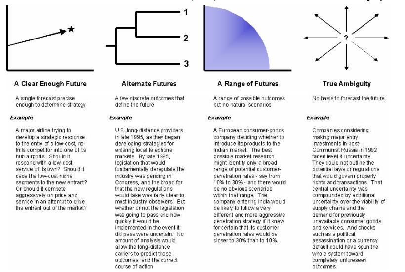

| Guideline: Developing Future Business Environment |
 |
|
| Related Elements |
|---|
The basic steps in defining the Future Business Environment are:
While all of the steps outlined above are required in order to define the future business environment, the first three steps are primarily viewed as inputs (or activities that generate the required inputs) from the perspective of the future environment definition work product. Step one (determine the organization issues…) is comprised of activities that fall within scope of the method component entitled Focal Area Definition. These activities have as their output a strategic question that needs to be answered or focused set of strategic issues that the organization needs to understand. The second step (understand the current business environment) describes the current environment in the following terms:
This PARTS framework is developed as part of an overall environmental analysis that should also identify the environmental forces relevant to the strategic question or issues that comprise the focal area of the engagement (the first part of Step 3). Step 3: Identify and analyze the key environmental forces Using a list of identified environmental forces, the project team needs to gain a clear understanding of their future prospects. The following excerpt from Learning from the Future (Liam & Fahey) describes how and why this is done. “In practice, a complex analysis (for determining the impact of these forces) is not required. The basic thrust of this analysis should move quickly to focus on the fewest, most important forces. At a minimum, however, your discussion of these environmental forces should cover:
At this stage, you need to start sorting these forces, recognizing that they are not all equally important or equally uncertain. For instance, while the typical analysis will likely identify a total of 50 or so such forces, the number of key drivers of the business will certainly be significantly fewer. Moreover, while uncertainty is a prevailing condition of the business environment, not everything is uncertain. Indeed, some key demographic trends may be considered virtually predetermined elements of the future. For example, the consumers of the next decade are already born, so their number is already known, but not their purchasing power and taste. In your planning and decision-making, you need to be very specific about what is important, and what is truly uncertain, and why. To be systematic in this sorting-out process, you can use an impact / uncertainty matrix. With a simple high-medium-low scoring system, you can position each one of these forces on the matrix. Rate each of these forces in terms of:
As a result of this sorting you can focus your attention and the search for scenario logics (the organizing principles around which the future environment definitions will be structured) in the next step (Step 4).” The Impact/Uncertainty matrix is provided as an example of an impact / uncertainty matrix that can be used to evaluate relevant environmental forces. More experienced practitioners may have their own tools and techniques for determining the relative uncertainty of an environmental force and its impact on the future environment. Those practitioners should continue to use the tools with which they feel the most comfortable and have proven project success.
What should be obvious at this point is the requirement for extensive input from the client in identifying and analyzing the relevant environmental forces. While SMEs may have enough understanding of a particular industry to identify the environmental forces shaping that industry, each company responds and is impacted differently by changes in the environment. This places critical importance on involving the appropriate client personnel in this activity. Leveraging client insight in this aspect of the engagement will lend credibility to any conclusions drawn from the analysis, build/maintain client interest in the project and shift the burden of responsibility for omissions or misstatements in the analysis. Step 4: Choose the tools and techniques to use for selecting among the future environment alternatives and developing the detail for each future environment definition In order to ensure that the level of resources invested in understanding the future is appropriate and that the understanding of the future is adequate to make strategic decisions, the project team needs to select the tools and techniques appropriate to the level of uncertainty about the future. The following activities in Step 4 will help determine the key forces driving uncertainty in the environment, the category of uncertainty into which the future environment falls and which of the available tools and techniques should be employed to elaborate on the detail of the future environment.

Many consultants who have experience in this area should have realized by this point that there have been numerous instances where Scenario Planning and other future definition techniques were sold well in advance of understanding the relative uncertainty in the environment as described above. The position this paper is taking in regards to those situations is that the sale of any type of future environment definition services should only be done upon the completion of some type of environmental uncertainty analysis. These services can be done as part of either a billable engagement, as part of pre-sale investigation or by a third party. However, if the degree of rigor applied to the upstream activities does not provide a level of confidence adequate to define the future environment, then the project team must be willing to modify its approach to one that employs tools and techniques relevant to the newly uncovered level of uncertainty. Step 5: Define (elaborate upon) the future environments Descriptions of how the various tools and techniques used to define future business environments are use are outside the scope of this work product description. The locations of the technique papers and templates for each of the items listed are available in the reference section of this document. Step 5 will simply describe the output or product of the various tools and techniques and how it fits within the overall strategy methodology. At the beginning of this step, a framework called PARTS was outlined as the preferred means for presenting information about the relevant environment due to its basis in the development and analysis of Value Nets. Step 5 will describe how this PARTS framework should be used to describe the future environment end states and how they will evolve from the current environment. In order to provide a brief refresh of PARTS, the elements of the framework have been reintroduced below:
Using the tools and techniques identified for the category of uncertainty, the project team defines the future environment using the previously described PARTS framework. This essentially paints a picture of the end point or the future state. However, the journey, or the path through which the environment is expected to evolve, is just as important as the destination.
For organizations making decisions in a relatively certain future will generate a description of one path and one destination. Organizations facing a greater level of uncertainty will have descriptions of multiple end states and the journeys that the organization will take to get there. As uncertainty increases and the number of alternative futures grows, it is critical that the project team provides full detail on each alternative. Only by fully detailing each alternative will the team be able to identify the signposts (described in Step 6) necessary for predicting the occurrence of a particular future. Step 6: Identify signposts or indicators that should be watched to signify that a particular future environment is emerging The following excerpt from Scenario Planning – Managing for the Future (Ringland) describes the importance of identifying leading indicators and signposts: “It is important to know as soon as possible which if he several future environments or scenarios is closest to the course of history as it actually unfolds. Sometimes that direction is obvious, especially with regard to factors like the health of the overall economy, but sometimes the leading indicators for a given scenario can be subtle. How, for example, should one calibrate the speed of economic restructuring from a smokestack economy towards an information-intensive economy? – By help-wanted advertising according to different SIC codes? – By union memberships? – By subscriptions to indicative periodicals? Once the different scenarios have been fleshed out and their implications for the focal issue determined, then it’s worth spending time and imagination on identifying a few indicators to monitor in an ongoing way. If those indicators are selected carefully and imaginatively, the company will gain a jump on its competition in knowing what the future holds for a given industry and how that future is likely to affect strategies and decisions in the industry. If the scenarios have been built according to the previous steps (as outlined in this document), then the scenarios will be able to translate movements of a few key indicators into an orderly set of industry-specific implications. The logical coherence that was built in tot he scenarios will allow logical implications of leading indicators to be drawn out of the scenarios.”
The real value in trying to understand the future is not just in determining what it will look like but also in
determining when it will happen. Using signposts to indicate the evolution of a future environment allows an
organization to prepare for change, not respond to it.
Step 7: Interpret the future environment definitions for their decision implications Development of future environment definitions is primarily done in the context of formulating a business strategy and identifying business opportunities. As such, decision implications for the future will be determined through opportunity identification or strategy formulation. |
||||||||||
| © Copyright IBM Corp. 1987, 2012 All Rights Reserved Property of IBM These materials are intended only for use as part of an IBM engagement |